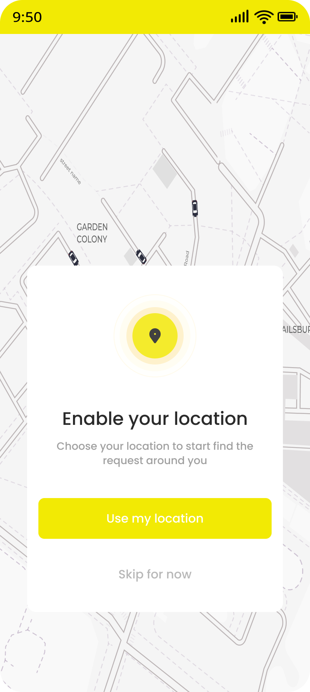
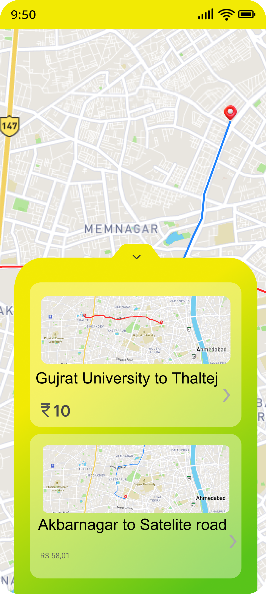
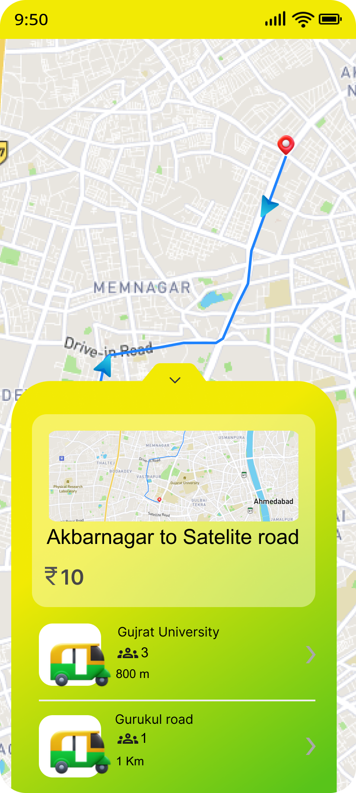
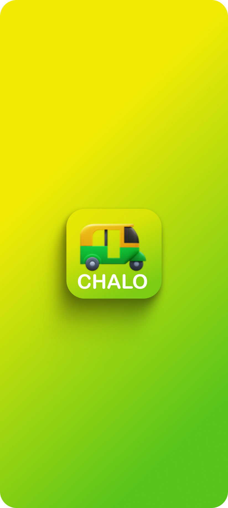
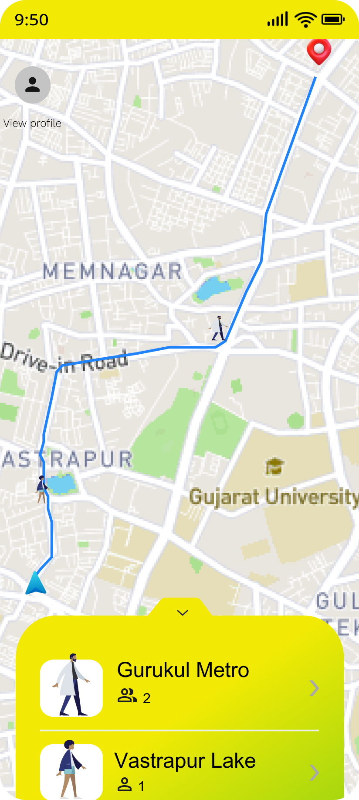
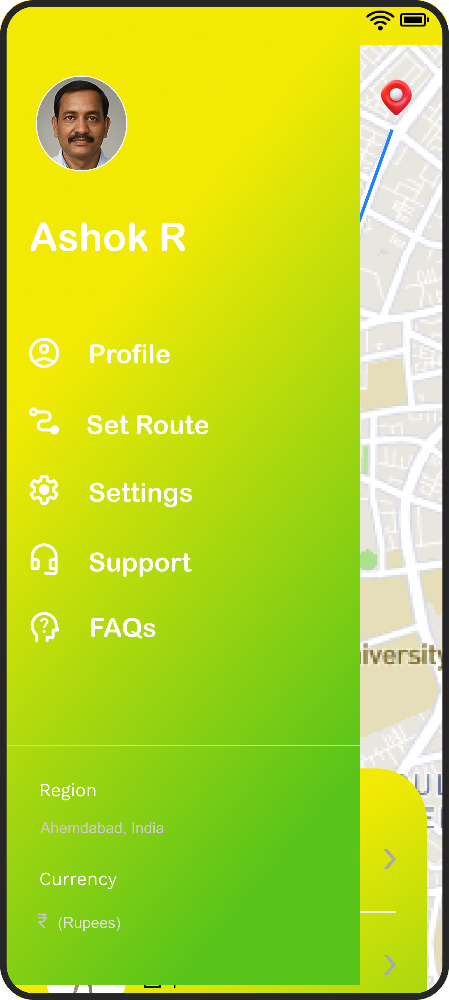

Problem Identification
The Daily Struggle: Every day, millions of commuters in India travel under the hot sun. Public transit schedules are unpredictable, and booking a private cab (like Uber or Ola) daily costs a fortune. The shared transit market (e.g., shared autos and shuttles) operates entirely offline, leaving passengers guessing when their next ride will arrive, while drivers circle empty looking for passengers, burning excess fuel.
User Research & Market Gap: Through extensive market research, I identified a massive, unserved middle market. Bridging the "First & Last Mile" gap requires combining the unmatched affordability of offline shared transit with the premium live tracking of modern ride-hailing apps. Chalo was born as a completely original startup idea to solve this specific pain point.
The Rider Experience
The passenger interface was meticulously designed to prioritize speed, usability, and transparency. Below are the key screens from the passenger application flow:

Splash Screen
A vibrant yellow-to-green gradient introduction featuring an auto-rickshaw icon that establishes brand identity instantly.

Location Access
Clean and straightforward location permission screen floating over the background map, with an unmissable "Use my location" button.

Route Selection
Displays a clear visual map path and a bottom sheet with selectable fixed-fare route options like "Gujrat University to Thaltej (₹10)".

Shuttle Selection
Highlights active available shuttles nearby on the selected route, showing passenger count and distance for full transparency.
Ride Details & Status
Confirmed ride view showing the driver's profile, vehicle number, live ETA (e.g., 15 min), route details, and a clear "Request To Wait" action.
The Driver Portal
For independent shuttle/auto drivers, the goal is digitization, increased daily ridership, and stable income. The driver app empowers them with precise routing and data:

Driver Splash Screen
Consistent branding on app launch, creating a unified ecosystem between passengers and drivers.
Go Online Prompt
Location request acting as the "Go Online" trigger for drivers to securely broadcast their position and trace routes.

Active Navigation
Map view with passenger pickup points marked by icons. The bottom sheet clearly lists upcoming stops and expected boarding counts.

Side Navigation Menu
A comprehensive slide-out menu offering easy access to Profile, Set Route, Settings, Support, FAQs, and region/currency preferences.
Full-Stack & AWS Architecture
Frontend Development: Built using React (via Vite) and packaged for mobile platforms using Ionic Capacitor. The real-time route animation is powered by the Google Maps JavaScript API.
True Road-Aligned Pathfinding: The magic tech of Chalo. Unlike simple straight lines, the backend stores hundreds of intermediate coordinates for each route. The frontend interpolates these to animate the shuttle icon smoothly along the actual road curves.
Backend Architecture: A high-performance Node.js & Express server backed by a fast SQLite database (better-sqlite3). User authentication and session management are handled securely via JWT and bcryptjs.
AWS DevOps & Automation: The entire application stack is containerized using multi-stage Docker builds. Deployment is fully automated via a CI/CD pipeline using GitHub Actions. Pushing code triggers a workflow that builds the Docker image, pushes it to Amazon ECR, and automatically updates the Amazon ECS Task Definition to perform a rolling update without downtime.
Experience Chalo
Download the fully functioning Android APK and see the platform in action.
Download APKThe Future Scope
Chalo proves my capability to take a raw startup idea, conduct user research, design the complete interface, code the full stack, and deploy it to enterprise-grade AWS infrastructure. Moving forward, the roadmap includes an in-app digital wallet for seamless payments and predictive routing.